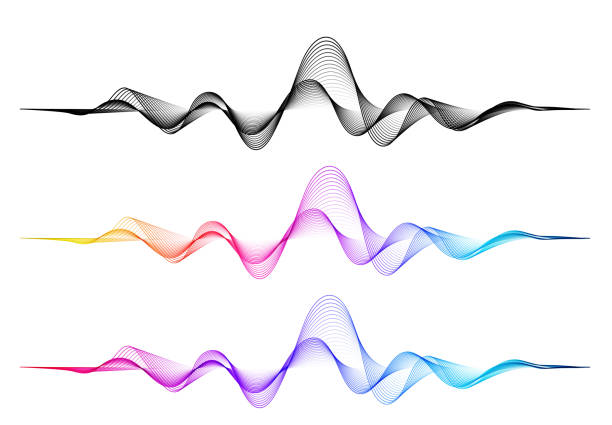
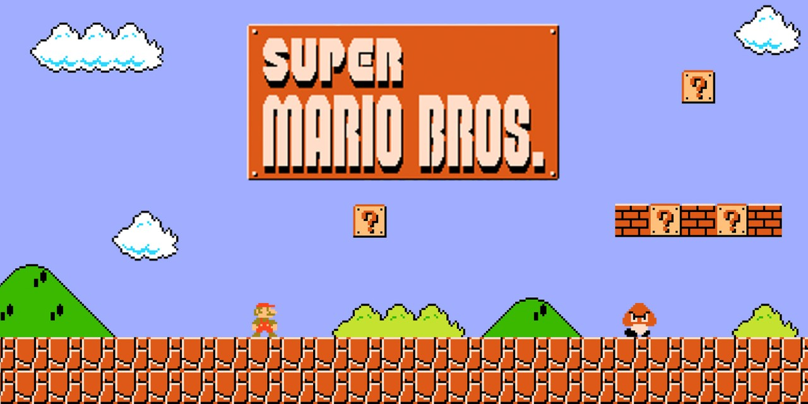
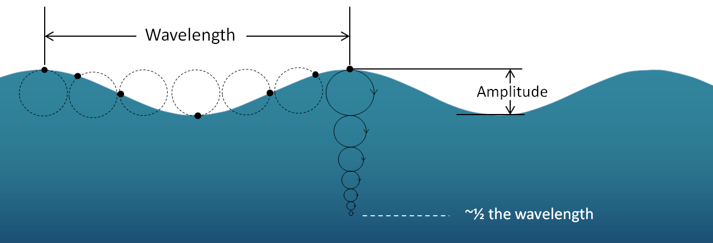

Hypothetical Applications of Optimal Transport
Here, I discuss some possible hypothetical applications of the Optimal Transport algorithms.
Seamless Music Transitions

Optimal transport theory has been shown countless times to be used in interpolating the transition from one image to another. With such, we can gain a set of intermediary images to develop a seamless transition. Consider the same concept of a seamless transition from one state to another, but regard transitioning from one sound wave to another. This is the idea I would like to describe.
With music streaming services such as Spotify, seamless playback is available with a few different methods, but are any of them “really” seamless? The first available method of seamless playback offered by Spotify utilizes a crossfade, wherein the first track fades out (decreases in volume) as the next track fades in (increases in volume). This is not ideal, as the ending of the first track is lost in the introduction of the new track. Despite this, it is still the most popular method to transitioning between sound clips as it removes abrupt ends in most circumstances. Sometimes, however, if two consecutive tracks differ greatly in pitch or the like, crossfading between them will not remove the abruptness of the transition, worsening the listening experience greatly. Also, with crossfade, a reduction in volume is noticable during the transition.
Another available transition method offered by Spotify is their “Automix” feature. This is an improvement over the crossfade feature, but is not available on all platforms nor does it actually regard the pitch of the notes from either track. Spotify defines the feature on their website as follows:
“(Automix) Allows beat-matched seamless transitions between songs on select Spotify playlists. Works even on Shuffle.”
It essentially mixes the previous track with the next track at a specific time, determined by some algorithm, in order to maintain seamless beat transitions. But again, this is not actually seamless, as the transition is still quite noticeable by the human ear. And I, for one, absolutely hate that there is not yet a widely available way to have this seamless transition.
So, how do we make a transition seamless? With optimal transport theory, obviously! We can use optimal transport to determine the most efficient transportation plan between the ending notes of the previous track and the beginning of the next track. This way, we will not experience any abrupt transitions between two songs. One song will simply “become” the other without a loss in volume or a noticeable gap in pitch! The sounds can be split into frequencies and moved in such a manner to produce a completely different song. Transitioning directly from the notes of one track to that of another with an optimal transport plan will provide us with a set of intermediary sounds in the transition. These intermediary sounds can then be placed between the two tracks to provide fully seamless sound transitions between tracks!
In addition to this use case, we can extend this method of seamlessly transitioning between sound clips to many other aspects of sound engineering as well. For instance, DJs constantly shift between tracks on a set list while performing. They would benefit largely from the ability to rid their performances of abrupt song changes. Additionally, music artists could engineer this into music on their albums and/or performances. Film score composers could even use this in movies to further immerse viewers.
Game Level Transitions

For this next application, I wish to further continue on the topic of optimal transport-based interpolation. The topic I wish to address here, more specifically, is level transitions in 2D-platformer video games. Consider possibly the most well-known platform game ever, Super Mario Bros. From one stage to the next, the user must transition abruptly between levels. This involves many stoppages. Mario first becomes unplayable after riding the flagpole at the end of a stage. Then the user is sent to a black screen detailing the level number and the number of lives left. Then, Mario will return to being playable once the next stage is loaded to the screen. Can we make this level transition seamless? If it were seamless, the game would have a much different and possibly more cohesive playing experience.
Enter optimal transport theory.
Firstly, we should define what it means for a transition to be seamless in this case. Visually, a transition would appear seamless, if one stage’s environment morphs into the next stage without abrupt visual stoppages. In the case with Super Mario Bros, visually, the black screen between stages is the only contributing factor to the transition’s abruptness. By simply using optimal transport-based image interpolation between the environment at the end of the previous stage, where Mario is no longer playable, to that of the next stage, we would gain a set of intermediary environments. Then, placing these intermediary environments in place of the black screen would provide us with a visually seamless transition. Next, we can draw the collision boxes around the new sprites and blocks for the next level. Once that is done, we may return control of Mario back to the user.
But, I do not believe that this transition would be truly seamless, as Mario is still unactionable during this transition. So, using simple image interpolation would still yield a somewhat “seam-ful” transition between levels. In other words, user-control is disrupted and hence the transition is still not truly seamless. So, let us keep Mario actionable during this transition. If Mario is actionable, however, we must correctly implement the collision boxes of the environment in real time so that the playability of the next level is left unaltered by our different method of transitioning.
A trivial solution to this follows. Consider, every individual frame in the transition between two stages, using optimal transport-based image interpolation. In the intermediary images, collisionable objects from the first stage will begin to disappear as new collisionable objects from the new stage appear. For each frame, we must redraw collision boxes to fit correctly over the current environment. And, since redrawing collision boxes is possible during playtime, evident when Mario eats a mushroom and gets larger, our solution is plausible. With this, all frames within the transition would be correctly drawn, and thus Mario would be correctly playable for the entire transition.
Also, it should be noted that I am assuming a locked viewbox when transitioning between levels. In other words, the level will not “scroll” during this transition. Therefore, we are only interpolating between static images. Static in this sense is only regarding the environment, and not the playable character (Mario). And although this may seem like an oversight, it is a condition which is easily enforced in a manner that leaves the player unaffected. For instance, we can speed up and slow down the transition so that it is physically impossible for Mario to reach a position which initiates the “scrolling” before the next level has been wholly reproduced. Once the transition is over, we can unlock the viewbox and the next level will continue normally.
Finally, we have reached a point of seamless transitions between levels in a platformer. The same concept can be extended to 3-dimensional games with level transitions as well. It would require some more severe modifications, however. Instead of image interpolation, we could interpolate a transition between surfaces on 3-dimensional mesh objects in the environment, and redraw the collision boxes over the intermediary models. The applications are limitless!
Wave Shape Analysis for Tidal Power Estimation

Finally, with this last application of optimal transport theory, I would like to harp on the main goal of optimal transport. That is, the desire to develop a better method of describing the statistic distance between distributions, or how different two distributions are. With utilization of the Wasserstein distance, we can do this with optimal transport theory.
Begin by considering wave energy. Wave energy, simply put, is a method of producing renewable energy from the motion of ocean waves. Unfortunately, this form of energy production is mostly defunct nowadays. And this is due to the inconsistency of waves and the expensive costs associated with developing and operating such a power plant. The amount of power produced by a wave energy plant is primarily dependent on the sheer size of the wave and the kinetic energy it encompasses. Often, the operational costs of the plant will outweigh the price of the energy it produces, and so the entire venture becomes unmanageable from a financial sense.
Now, one solution to this problem would be to intermittently run the power plant only at times where the price of the energy produced is greater than the current operational costs. This way, operational costs are not incurred when power output is too low (i.e. the waves are not large enough). But, with this solution, we raise another important question: When exactly should the power plant be run? To put this solution into effect, we would need some way to decide when the ideal times to activate the power plant are. That is where optimal transport theory comes in.
To apply optimal transport theory here, there is something we must know first. Assume that we know the optimal wave shape to produce the most energy at any given time. Although time-consuming, finding the optimal wave shape would be plausible. For instance, over the course of a year, researchers could chart waveforms along with the amount of energy produced by the plant. Then, they could assign the optimal waveform as that which produced the most energy in that year. This waveform may differ from year to year, so I will refer to the optimal waveform as the current optimal waveform. With optimal transport, we can determine the Wasserstein distance between two waves, denoting how different the two waves are. At any given time, we are able to compute this distance between the optimal waveform and the current waveform. So, in realtime, we could compute how “different” our current waveform is from the optimal waveform.
Now, over the course of another year, suppose we charted the Wasserstein distances between the optimal waveform and the current waveform. In addition to this, we would keep track of when the power plant becomes profitable (i.e. the operational costs are outweighed by the energy production). To conceptualize this further, consider the fact that at some point, any given waveform may be too “different” from the optimal waveform to produce enough energy to offset the current operational costs. This is why we keep track of when the plant becomes profitable. With the strategy above, we can determine an upper limit to the Wasserstein distance \(W\) such that any distance greater than \(W\) causes the plant to become unprofitable. With this upper limit, we can now know at which times we should activate the generator to garner the greatest profit margins. And finally with greater profit margins, running a wave energy plant may finally become a financially manageable venture.
It is important to note that I do not know definitively if there is any correlation between the Wasserstein distance between two wave forms and the amount of kinetic energy these waves contain. For example, does a large Wasserstein distance between some waveform and the optimal waveform mean that the two waveforms contain largely different amounts of kinetic energy? I am not sure. I do, however, know that the kinetic energy of a wave is directly correlated with a wave’s amplitude, frequency, and wavelength. And all such factors which contribute to a wave’s kinetic energy are also influential to its shape. I just am not educated enough on this topic to definitively understand whether variations in frequency and wavelength contribute largely to a variation in Wasserstein distance. Or even if ocean waves vary enough in frequency and wavelength to consider these values at all.